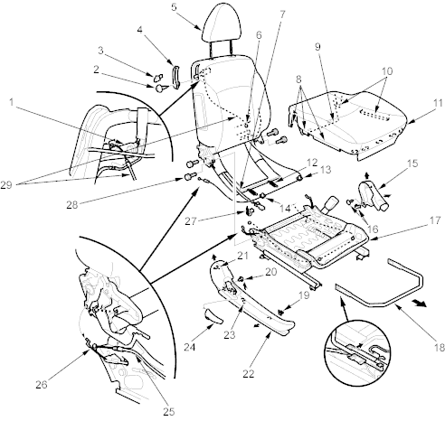

Seats
Front Seat Disassembly/Reassembly - Passenger's
|
20-39 |
|
SRS components are located in this area. Review the SRS component locations (see page 23-24) and the precautions and procedures (see page 23-25) in the SRS section before performing repairs or service. Refer to the '01 Civic Shop Manual on this CD.
NOTE:
- Take care not to tear the seams or damage the seat covers.
- Put on gloves to protect your hands.
- When prying with a flat-tip screwdriver, wrap it with protective tape to prevent damage.
Disassemble the seat as shown. To remove the rear seat access cable from the rear seat access lever, remove the seat-back cover and pad from the seat-back frame, refer to the '01 Civic Shop Manual on this CD (see page 20-234).
Reassemble the seat in the reverse order of disassembly and note these items:
- Apply multipurpose grease to the moving portion of the seat track.
- To prevent wrinkles in the seat cushion cover, stretch the material evenly over the pad.
- Adjust the rear seat access cable.
- Make sure the rear seat access cables are connected properly.
- Replace any damaged clips and replace the wire ties with new ones.
 |
- REAR SEAT ACCESS LEVER
- SCREW
- REAR SEAT ACCESS KNOB
- REAR SEAT ACCESS TRIM
- HEADSET
- CLIP
- SIDE AIRBAG HARNESS
- HOOKS
- Release the seat cushion cover from the cushion frame spring.
- HOOKS
- HOOKS
(Five places)
- HANGER SPRING
- CLIP
- CLIP
- CENTRE COVER
- CLIPS
- SEAT CUSHION FRAME/SEAT TRACKS
- SLIDE LEVER
- CLIP
- CLIP
- HOOK
- RECLINE COVER
- HOOK
- RECLINE KNOB
- REAR SEAT ACCESS CABLE
- REAR SEAT ACCESS CABLE
(Slide adjuster side)
- WIRE TIE
- 10 x 1.25 mm
47 Nm (4.8 kgf/m, 35 lbf/ft)
- REAR SEAT ACCESS CABLE
|